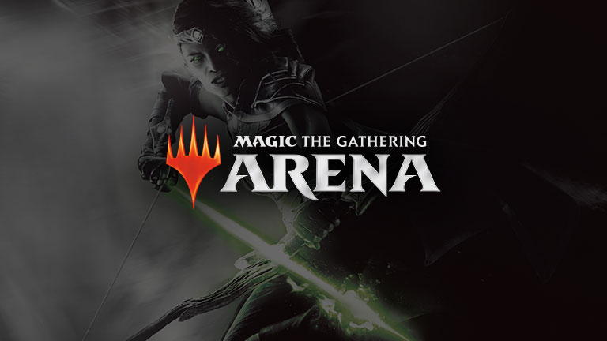

21 sierpnia 2019
Podczas trwających właśnie w Kolonii targów Gamescom Czarodzieje z Wybrzeża ogłosili, jak to sami ujęli "dostarczenie gry MtG: Arena milionom nowych graczy".

Przypomnijmy, Magic the Gathering: Arena to najnowsza cyfrowa wersja legendarnej karcianki. Od starego, dobrego, dostępnego od kilkunastu lat Magic Online, poza nowoczesnym interfejsem graficznym, różni ją przede wszystkim model biznesowy. W obu grach co prawda musimy kupować boostery z losowymi kartami, aby z nich zbudować talię. Jednak Magic Online, wzorem tradycyjnego papierowego Medżika, umożliwiał wymianę pojedynczych kart z innymi graczami, a tym samym zakup singli, by tańszym kosztem złożyć deck.
W Arenie natomiast jedynym sposobem pozyskania nowych kart jest zakup za realną gotówkę losowych paczek. Nie jestem co prawda zwolennikiem takiego podejścia, ale jednocześnie nie dziwię się Wizardsom. Skoro model ten doskonale sprawdził się w przypadku Hearthstone'a od Blizzarda, to czemu nie miałoby to wyjść w przypadku pierwszej i najpopularniejszej gry karcianej na świecie.
Tyle tytułem wstępu, choć mam wrażenie, że zajmie on połowę artykułu. Jak zatem Wizards of the Coast zamierza pozyskać "miliony nowych graczy"? Szczerze mówiąc nie wiem, bo w moim odczuciu wygląda to na jedną wielką marketingową ściemę. Za tak odważnym hasłem kryje się bowiem udostępnienie tytułu na "ulubionej" przez niektórych graczy platformie sprzedaży Epic Games Store. Będzie to taki prawie-exclusive, albowiem Arena nie będzie dostępna na Steamie, GOG-u czy Microsoft Store. Dalej jednak będzie można ją ściągnąć tak jak dotychczas, czyli w postaci instalatora z oficjalnej strony MTGArena.com.
Jedyną pozytywną wiadomością, jaką wychwyciłem z notki prasowej Wizardsów, to zapowiedź, że wraz z premierą Areny na Epic Storze, obsługi systemu macOS. Jako wieloletni użytkownik sprzętów spod znaku nadgryzionego jabłka, trochę uciążliwe dla mnie było restartowanie komputera by uruchomić Windowsa za każdym razem, gdy naszła mnie ochota pogrania w MtG: Arena. Sam na pewno zainstaluję grę, jak tylko ukaże się na komputery Apple. Nie wróżę jednak Wizardsom wielkiego sukcesu, będącego efektem mariażu z Epic Games. A tym bardziej pozyskania milionów nowych graczy. Od samego początku, czyli od czasu, gdy miałem okazję zagrać w zamkniętą betę niemal rok temu, jestem zdania, że aby zbliżyć się popularnością do blizzardowego Hearthstone'a Czarodzieje muszą czym prędzej wypuścić wersję mobilną na iOS i Androida.